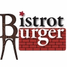
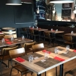
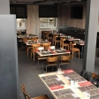
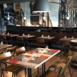

01
Le Bistrot
Pain sésame, bœuf, cheddar, oignons caramélisés, cornichons, tomate cœur de bœuf, sauce Bistrot.
Prix à confirmer
Bistrot BurgerToujours ouvert à Howald — commandez en ligne ou passez nous voir. Notre site a disparu, pas notre cuisine.
| Lundi | 10:00 – 22:00 |
| Mardi | 10:00 – 18:00 |
| Mercredi | 10:00 – 22:00 |
| Jeudi | 10:00 – 22:00 |
| Vendredi | 10:00 – 22:00 |
| Samedi | 10:00 – 16:00 |
| Dimanche | Fermé |
| Lundi | 11:30–14:30 · 18:00–21:00 |
| Mardi | 11:30–14:30 |
| Mercredi | 11:30–14:30 · 18:00–21:00 |
| Jeudi | 11:30–14:30 · 18:00–21:00 |
| Vendredi | 11:30–14:30 · 18:00–21:00 |
| Samedi | 11:30–14:30 |
| Dimanche | Fermé |
Un cadre chaleureux et urbain où mobilier vintage et visuels modernes partagent la même atmosphère.
Autant bistrot de quartier que restaurant : les portes ouvrent dès 10h00 pour un café du matin.


